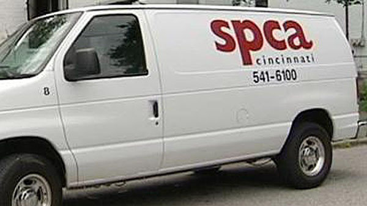

Using app technology to help SPCA promote adoption and animal wellness
Prototype LinkThe SPCA Cincinnati Mobile App is an app designed to help promote adoption and fostering of rescued animals. The staff and volunteers of SPCA Cincinnati work hard to provide the best treatment for animals in their care. However, an average of 36 new animals per day calls for increased community involvement to save the lives of animals in need. Although the SPCA has a mobile version of their website, I believe that developing an interactive app would increase community awareness and involvement, and promote adoption, fostering, and donations for the SPCA Cincinnati.

To better understand how technology could benefit the SPCA, I visited the SPCA Cincinnati location in Northside. After speaking to employees and petting cats and dogs, I found that the SPCA is always in need of donations and as much volunteer help as they can get. Their website also currently does not provide an online portal for their regular volunteers to pick up shifts. Another feature that might benefit the shelter would be allowing donations to be purchased in-app.
Using technology the right way could help with overcrowding and underfunding in animal shelters.
Although everyone in my group had individual ideas, all of them centered around community and connection with others. We were all looking for ways to connect users and promote sharing of information between them.